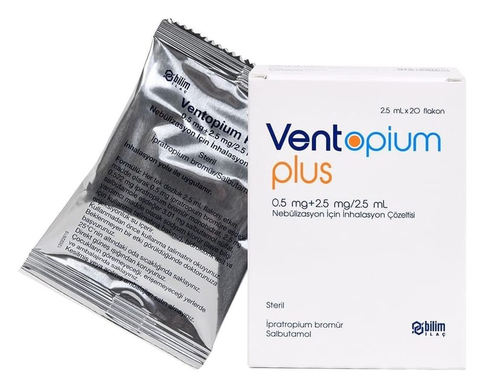

Ventopium Plus 0.5 mg + 2.5 mg/2.5 ml Nebülizasyon İçin İnhalasyon Çözeltisi ,20 Flakon

Ne için kullanılır
KT · Bölüm 1 VENTOPİUM PLUS, ağız veya burundan soluyarak (inhalasyon yoluyla) kullanılmak için hazırlanmış berrak, renksiz bir çözeltidir. Nebülizatör cihazı ile uygulandığında hava ile karışarak havada asılı zerrecikler (aerosol) oluşturur ve akciğerlere bu şekilde ulaşır. VENTOPİUM PLUS iki farklı ilaç içerir: İpratropium bromür Salbutamol sülfat
Her iki ilaç da “bronkodilatörler”, yani “bronş açıcılar” adı verilen bir ilaç grubunda yer alır. Bu ilaçlar “kronik obstrüktif akciğer hastalığı” ya da kısaca KOAH denilen bir hastalıkta daha kolay nefes almayı sağlamak için kullanılır. Bu ilaçlar, solunum yolunuzu açarak etki gösterir. VENTOPİUM PLUS, her biri bir defada kullanılmak üzere hazırlanmış, 20 adet Alu folyo paket içerisinde, 2,5 mL çözelti içeren twist off kapaklı LDPE flakon içeren ambalajlar halinde piyasaya sunulmaktadır.